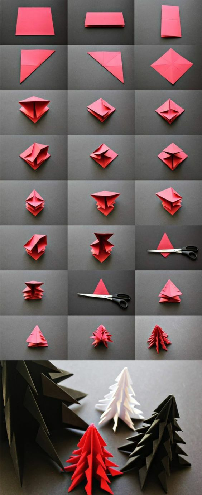

Recettes : les meilleures recettes de cuisine - recette classique, originale, exotique ...
2021.04.13 12:45
xwRlOl6a2QgBwb_R7avOS 1618305254613 Jeu-Concours : paniers Quitoque et bons de réductions à gagner dès maintenant ! Connexion Inscription Découvrez des recettes personnalisées en créant votre profil Marmiton Recettes par catégories Idées recettes Aller plus loin Mes aides à la cuisine Communauté Abonnez-vous Recettes par catégories Apéritifs Entrées Plats Desserts Boissons Petit-déj/brunch Idées recettes Qu'est-ce qu'on mange ce soir ? Menu de la semaine Recettes de saison Recettes par thème Recettes par ingrédient Top des recettes Les grands classiques Nouveautés Proposer une recette Aller plus loin Mieux manger Mieux acheter Bon plans Mes aides à la cuisine Table de conversion Mon Frigo Techniques en vidéos Communauté Participer au forum Devenir testeur Abonnez-vous Marmiton magazine Newsletters Je recherche une recette Je recherche par ingrédient
Rechercher une recette
Une recette (je cherche une recette en fonction des ingrédients que j'aime ou que je n'aime pas) Dans mon frigo (je cherche une recette en fonction des ingrédients que j'ai dans mon frigo)Les recettes les plus recherchées par les internautes par type de plat
Entrées Plats Desserts Amuses bouches Sauces Accompagnements Boissons EntréeTacos mexicains
4.6 / 5 sur 33 avis55 min Entrée
Pain (rapide)
4.3 / 5 sur 102 avis1h10 Entrée
Gaspacho au Thermomix
4.1 / 5 sur 7 avis20 min Entrée
Falafel (croquettes de pois chiches)
4 / 5 sur 31 avis1h20 Entrée
Quiche au thon
4.7 / 5 sur 194 avis30 min Entrée
Salade de riz d'été facile
4.5 / 5 sur 33 avis25 min Entrée
Les nems de ma grand mère (recette originale)
4.7 / 5 sur 153 avis1h45 Entrée
Velouté de butternut à la cannelle
4.9 / 5 sur 210 avis35 min Entrée
Blinis faciles maison
4.8 / 5 sur 746 avis25 min Entrée
Samoussa rapide au boeuf
4.8 / 5 sur 131 avis30 min Entrée
Cake au thon
4.5 / 5 sur 212 avis50 min Entrée
Quiche aux poireaux
4.6 / 5 sur 59 avis1h10 Entrée
Rouleaux de printemps
4.4 / 5 sur 34 avis35 min Entrée
saumon en papillote
4.4 / 5 sur 7 avis35 min Entrée
Pissaladière
4.5 / 5 sur 96 avis1h15
- Recettes de cocktails et boissons
- Cadastre de l'Emploi Non Marchand - Cadastre de l'emploi ...
- Blédina : Repas et recettes pour l'alimentation de votre bébé
- Recettes de cuisine | 750g
- Machines à Café Inissia | Nespresso
- Gateau : nos délicieuses recettes de gateau
- Recettes : les meilleures recettes de cuisine - recette ...
- Cookpad - Que la cuisine rime avec plaisir!
- Cuisinez avec Campbells - De délicieuses recettes faciles ...
- Clea cuisine | recettes bio et veggie pour tous
- Recettes de cocktails et boissons
recettes bio et veggie pour tous ! #à la Une. Sando : les sandwichs japonais. sandwichs 9 avril 2021. Cette semaine, mon cerveau a refusé de se remettre dans la configuration télétravail + travail scolaire + enfant à la maison du printemps dernier. A la place, on a décidé de se lancer dans une semaine à thème : les sandoichi, autrement ...
- Cadastre de l'Emploi Non Marchand - Cadastre de l'emploi ...
Vous cherchez des recettes pour quiche ? Les Foodies vous présente 1295 recettes avec photos à découvrir au plus vite !
- Blédina : Repas et recettes pour l'alimentation de votre bébé
Besoin d'inspiration en cuisine ? 750g vous propose des idées pour une cuisine quotidienne pratique, créative, savoureuse et adaptée à vos exigences.
- Recettes de cuisine | 750g
Découvrez la Gamme de Machines à Café Inissia par Nespresso, la plus petite et colorée des Machines Nespresso avec toujours ce goût exceptionnel de café.
- Machines à Café Inissia | Nespresso
Je peux stocker et organiser mes recettes, mes commentaires, créer des menus, etc. Aller sur mon carnet. Nouveautés. Anniversaire d'enfant : notre sélection pour une belle table de fête Notre sélection des meilleures cuisinières pour enfants. Suivez-nous. Suivez-nous sur les réseaux sociaux !
- Gateau : nos délicieuses recettes de gateau
Soif de recettes ? On se donne rendez-vous dans votre boîte mail ! Découvrir nos newsletters. Retrouvez Marmiton où que vous soyez en téléchargeant l'application. Concocté avec ♥ par Marmiton. Tous droits réservés Marmiton.org - 1999-2021.
- Recettes : les meilleures recettes de cuisine - recette ...
Rejoignez notre communauté de cuisiniers amateurs et partagez vous aussi vos recettes de tous les jours !
- Cookpad - Que la cuisine rime avec plaisir!
Voir les recettes . Whisky (bour... 293 recettes Voir les recettes . Negroni. 2.6 / 5. sur 1239 avis . Planter's Punch. 3 / 5. sur 1238 avis . Marquisette. 3 / 5. sur 1230 avis . Spritz dolce. 2.8 / 5. sur 1128 avis . Les recettes de #COCKTAILS les plus populaires Tequila Sunrise. B-52. Daiquiri ...
- Cuisinez avec Campbells - De délicieuses recettes faciles ...
En cette période particulière de confinement, toute l’équipe de la DENM pense à vous et à vos proches. Pensez aux autres, restez chez vous et surtout prenez soin de vous.
- Clea cuisine | recettes bio et veggie pour tous
Bouillon Concentré Recettes. Trouvez votre idéal de saveur avec le bouillon concentré Campbell’s! Nos bouillons concentrés sont jusqu’à quatre fois plus concentrés que nos bouillons prêts à utiliser.
recettes bio et veggie pour tous ! #à la Une. Sando : les sandwichs japonais. sandwichs 9 avril 2021. Cette semaine, mon cerveau a refusé de se remettre dans la configuration télétravail + travail scolaire + enfant à la maison du printemps dernier. A la place, on a décidé de se lancer dans une semaine à thème : les sandoichi, autrement ...
Vous cherchez des recettes pour quiche ? Les Foodies vous présente 1295 recettes avec photos à découvrir au plus vite !
Besoin d'inspiration en cuisine ? 750g vous propose des idées pour une cuisine quotidienne pratique, créative, savoureuse et adaptée à vos exigences.
Découvrez la Gamme de Machines à Café Inissia par Nespresso, la plus petite et colorée des Machines Nespresso avec toujours ce goût exceptionnel de café.
Je peux stocker et organiser mes recettes, mes commentaires, créer des menus, etc. Aller sur mon carnet. Nouveautés. Anniversaire d'enfant : notre sélection pour une belle table de fête Notre sélection des meilleures cuisinières pour enfants. Suivez-nous. Suivez-nous sur les réseaux sociaux !
Soif de recettes ? On se donne rendez-vous dans votre boîte mail ! Découvrir nos newsletters. Retrouvez Marmiton où que vous soyez en téléchargeant l'application. Concocté avec ♥ par Marmiton. Tous droits réservés Marmiton.org - 1999-2021.
Rejoignez notre communauté de cuisiniers amateurs et partagez vous aussi vos recettes de tous les jours !
Voir les recettes . Whisky (bour... 293 recettes Voir les recettes . Negroni. 2.6 / 5. sur 1239 avis . Planter's Punch. 3 / 5. sur 1238 avis . Marquisette. 3 / 5. sur 1230 avis . Spritz dolce. 2.8 / 5. sur 1128 avis . Les recettes de #COCKTAILS les plus populaires Tequila Sunrise. B-52. Daiquiri ...
En cette période particulière de confinement, toute l’équipe de la DENM pense à vous et à vos proches. Pensez aux autres, restez chez vous et surtout prenez soin de vous.
Bouillon Concentré Recettes. Trouvez votre idéal de saveur avec le bouillon concentré Campbell’s! Nos bouillons concentrés sont jusqu’à quatre fois plus concentrés que nos bouillons prêts à utiliser.
